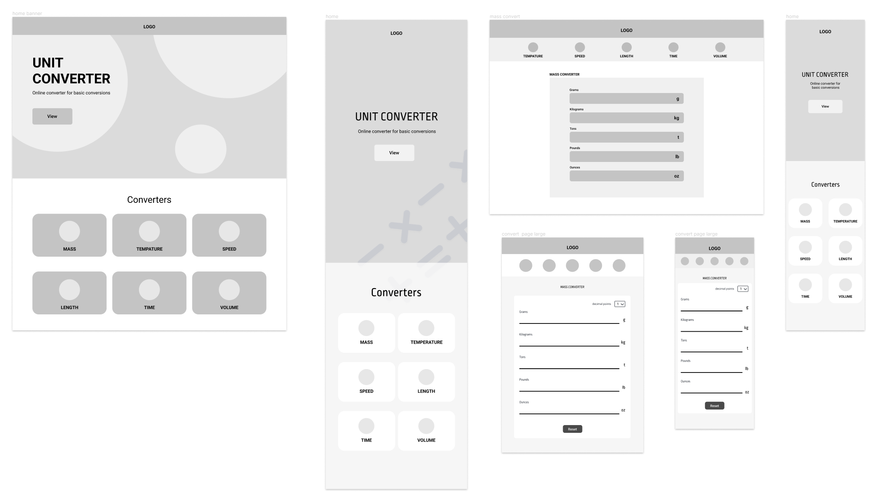
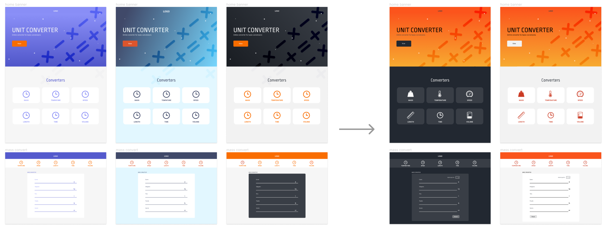

Responsibilities
Project Management Lead
Web Development
User Research
Team
Amina Al-Helali
Amy Van
Tools
Figma
GitHub
HTML, CSS, JavaScript
Bootstrap
Timeline
March 2022-April 2022
Concept
EZ PZ Unit Converter is a website for simple conversions in six categories: mass, temperature, speed, length, time, and volume. The website was conceived for a final group project for a web development course and was developed using HTML, CSS, JavaScript, and Bootstrap.
Process and Design
Wireframes
We created wireframes for mobile, tablet, and desktop interfaces. We decided that we will have a homepage with image box links to each converter and each converter page will have a similar layout. A navigation bar is on each converter page.
Mockups
We created wireframes for mobile, tablet, and desktop interfaces. We decided that we will have a homepage with image box links to each converter and each converter page will have a similar layout. A navigation bar is on each converter page.
Style Guide


A design spec was created with details on colour codes, typography, site behaviours, logos, and more.
Key Features
Dark Mode / Light Mode
We decided to implement a dark mode and light mode using localStorage to store user preference.

Calculate as you type
Whatever the user enters will calculated automatically without needing to press a button to calculate.

Decimal Precision Control
Users can choose how precise they wish their calculations to be.

Responsive Design
The site is responsive and designed for mobile, tablet, and PC dimensions.

Conclusion
Learning Experience
Design and development process.
I learned how to effectively work in a group using GitHub and online
collaborations tools through addressing challenges we encountered
along the way.
Project management.
I took the lead in project management and glue work, which I really
enjoyed. I learned how to help my team coordinate our ideas and
helped plan out the workflow process.
Accessibility and responsiveness.
We learned and researched guidelines such as WCAG and colour
contrast ratios in order to improve our website's accessibility.
Next Steps
We were able to collect user feedback, but we did
not have enough time to implement it and add more features.